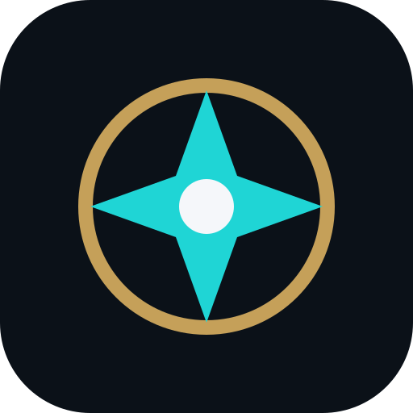

Field Tools
WatchDog Console
Recon, people search, incidents, network intelligence, defense, authorized pen testing, dark-web research, hardware lab, satellite/RF and evidence tools.
MAIN CONSOLEExposure Scanner
Enter a name, username, alias, email, phone number or domain and build a deep public-web + Tor research scan with match correlation.
WEB + TOR RESEARCHScam / Fake Account
Preserve evidence, hash screenshots/files, search public identifiers, document impersonation indicators and build a reporting packet.
PUBLIC-SOURCE CASE WORKMedia Forensics
Inspect images, video, audio, documents and text for metadata conflicts, edits, provenance signals, suspicious discontinuities and internal inconsistencies.
AUTHENTICITY TRIAGEImpersonation Defense
Document suspicious profiles, compare public claims and prepare evidence for platform reporting without doxxing.
CASE BUILDERPrivacy / OPSEC
Check your research compartment, reduce linkability, review privacy practices and clean metadata before sharing evidence.
SELF-AUDIT